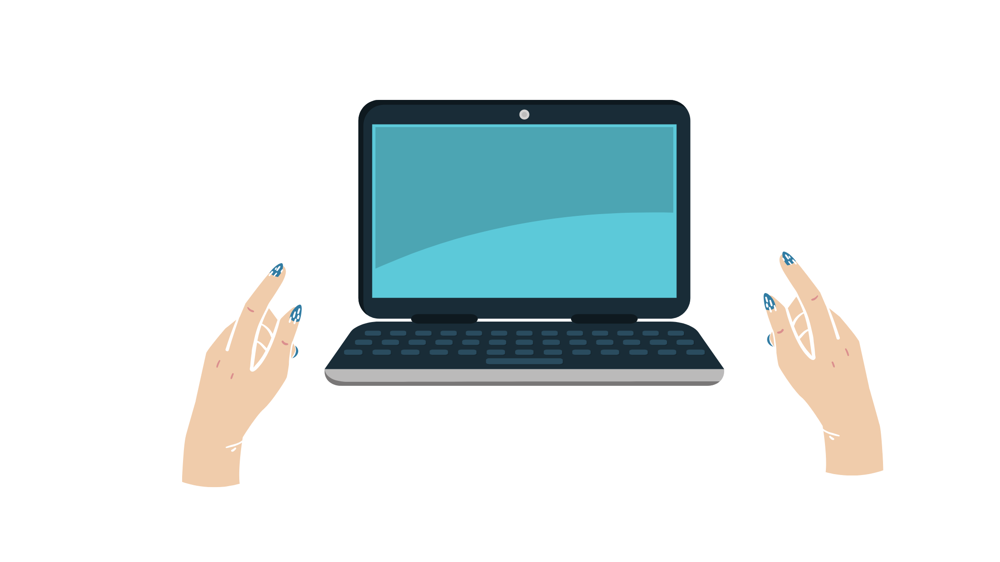
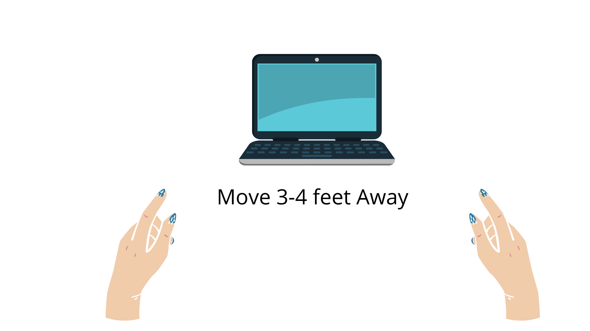
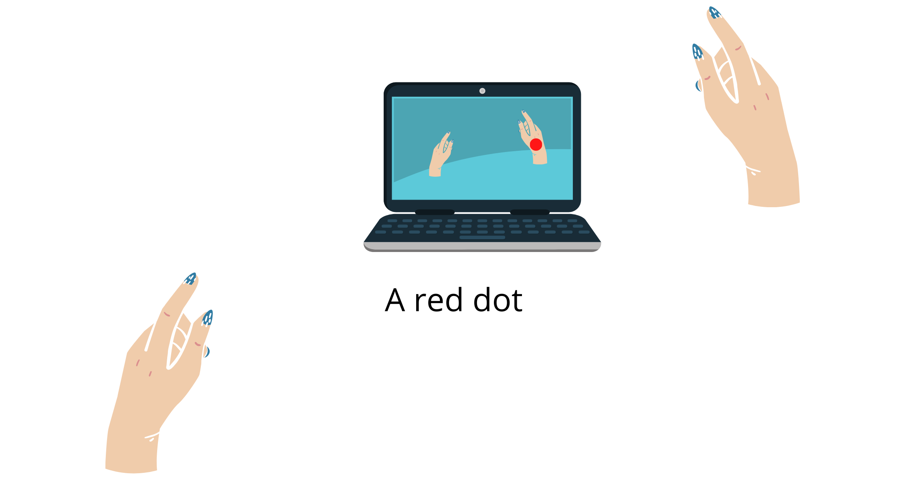
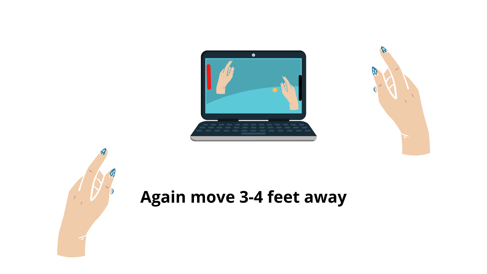

AI PING PONG GAME
Instructions
- First , keep your Laptop/Computer screen straight 
- Move yourself approximately 3-4 feet away from the Laptop/Computer 
- Move your Right Wrist in an ascending and descending manner, A red dot should appear on your right wrist .
- Now, press the play button , And again move yourself 3-4 feet away from Laptop/Computer 
- The Red Paddel is your paddel , that will move as per the movement of your right wrist . 